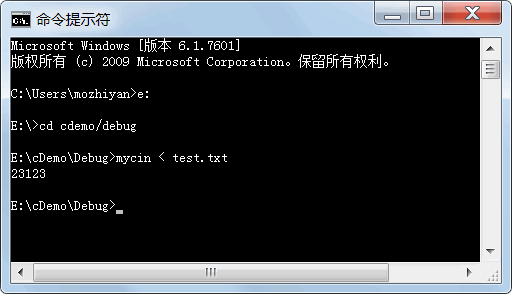
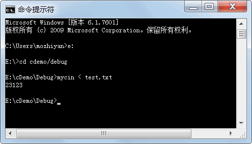

首页 > 编程笔记
C++ cin判断输入结束（读取结束）
cin 可以用来从键盘输入数据；将标准输入重定向为文件后，cin 也可以用来从文件中读入数据。在输入数据的多少不确定，且没有结束标志的情况下，该如何判断输入数据已经读完了呢？
从文件中读取数据很好办，到达文件末尾就读取结束了。从控制台读取数据怎么办呢？总不能把控制台关闭吧？这样程序也运行结束了！
其实，在控制台中输入特殊的控制字符就表示输入结束了：
不管是文件末尾，还是 Ctrl+Z 或者 Ctrl+D，它们都是结束标志；cin 在正常读取时返回 true，遇到结束标志时返回 false，我们可以根据 cin 的返回值来判断是否读取结束。
完整的输入输出结果如下所示：
cin 读到文件末尾时，
下面是笔者实操演示图：

这是因为，istream 类对强制类型转换运算符 bool 进行了重载，这使得 cin 对象可以被自动转换成 bool 类型。所谓自动转换的过程，就是调用 cin 的 operator bool() 这个成员函数，而该成员函数可以返回某个标志值，该标志值在 cin 没有读到输入结尾时为 true，读到输入结尾后变为 false。对该标志值的设置，在 operator <<() 成员函数中进行。
如果 cin 在读取过程中发生了错误，
从文件中读取数据很好办，到达文件末尾就读取结束了。从控制台读取数据怎么办呢？总不能把控制台关闭吧？这样程序也运行结束了！
其实，在控制台中输入特殊的控制字符就表示输入结束了：
- 在 Windows 系统中，通过键盘输入时，按 Ctrl+Z 组合键后再按回车键，就代表输入结束。
- 在 UNIX/Linux/Mac OS 系统中，Ctrl+D 代表输入结束。
不管是文件末尾，还是 Ctrl+Z 或者 Ctrl+D，它们都是结束标志；cin 在正常读取时返回 true，遇到结束标志时返回 false，我们可以根据 cin 的返回值来判断是否读取结束。
cin 判断控制台（键盘）读取结束
输入若干个正整数，输出其中的最大值，程序该如何编写？#include <iostream> using namespace std; int main() { int n; int maxN = 0; while (cin >> n){ //输入没有结束，cin 就返回 true，条件就为真 if (maxN < n) maxN = n; } cout << maxN <<endl; return 0; }在 Windows 下运行该程序，先输入以下整数：
10
30
93
206
8
完整的输入输出结果如下所示：
10↙
30↙
93↙
206↙
8↙
^Z↙
206
↙表示回车键，^Z表示 Ctrl+Z 组合键。
cin 判断文件读取结束
如果将标准输入重定向为某个文件，如在程序开始添加freopen("test.txt", "r", stdin);语句，或者不添加上述语句，但是在 Windows 的“命令提示符”窗口中输入：
mycin < test.txt //假设编译生成的可执行文件的名字为 mycin.exe
则都能使得本程序不再从键盘输入数据，而是从 test.txt 文件输入数据（前提是 test.txt 文件和 mycin.exe 在同一个文件夹中）。在这种情况下，test.txt 文件中并不需要包含 Ctrl+Z，只要有用空格或回车隔开的若干个正整数即可。cin 读到文件末尾时，
cin>>n就会返回 false，从而导致程序结束。例如，假定 test.txt 文件中的内容如下所示：
112
23123
34 444 55
44
mycin < test.txt，则程序的输出是：
23123
下面是笔者实操演示图：

答疑解惑
在《C++重载<<和>>》一节中我们提到过 istream 类将>>重载为成员函数，而且这些成员函数的返回值是 cin 的引用。准确地说，cin>>n的返回值的确是 istream & 类型的，而 while 语句中的条件表达式的返回值应该是 bool 类型、整数类型或其他和整数类型兼容的类型，istream & 显然和整数类型不兼容，为什么while(cin>>n)还能成立呢？这是因为，istream 类对强制类型转换运算符 bool 进行了重载，这使得 cin 对象可以被自动转换成 bool 类型。所谓自动转换的过程，就是调用 cin 的 operator bool() 这个成员函数，而该成员函数可以返回某个标志值，该标志值在 cin 没有读到输入结尾时为 true，读到输入结尾后变为 false。对该标志值的设置，在 operator <<() 成员函数中进行。
如果 cin 在读取过程中发生了错误，
cin>>n这样的表达式也会返回 false。例如下面的程序：
#include <iostream>
using namespace std;
int main()
{
int n;
while (cin >> n)
cout << n << endl;
return 0;
}
程序本该输入整数，如果输入了一个字母，则程序就会结束。因为，应该读入整数时却读入了字母也算读入出错。关注公众号「站长严长生」，在手机上阅读所有教程，随时随地都能学习。内含一款搜索神器，免费下载全网书籍和视频。

微信扫码关注公众号